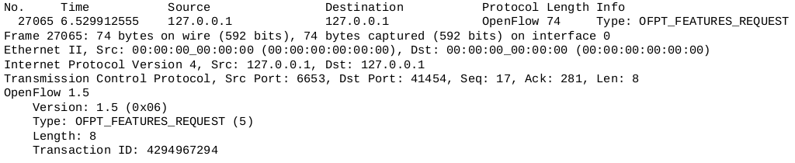
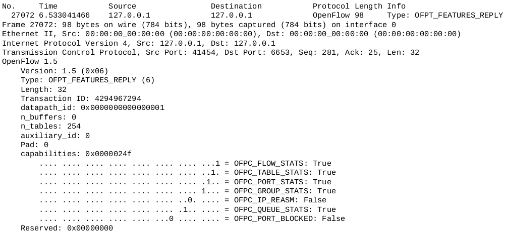
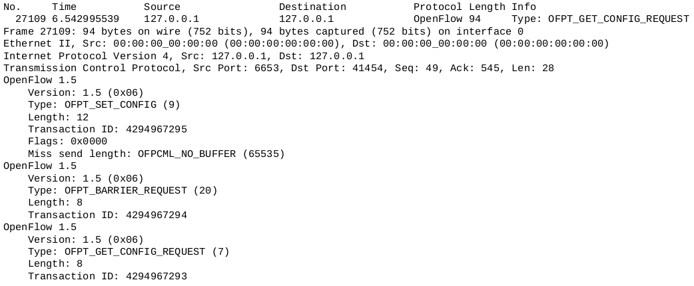
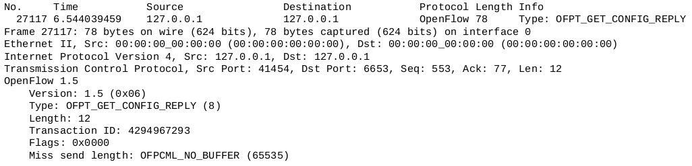
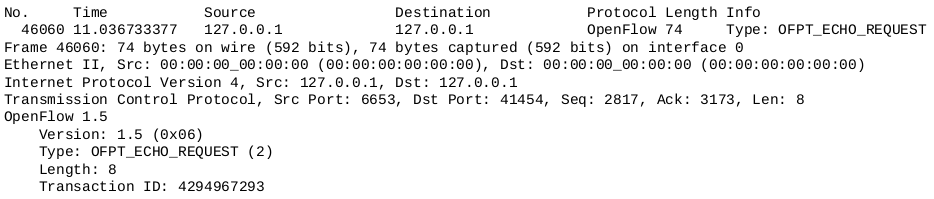
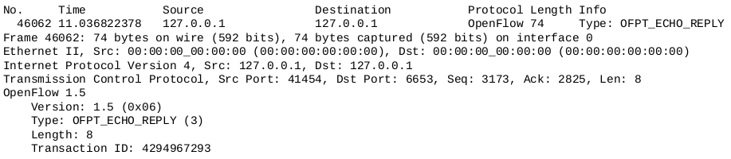
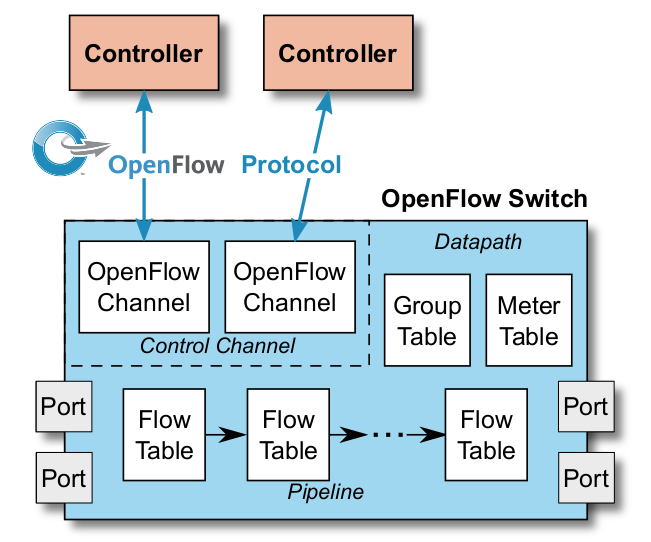
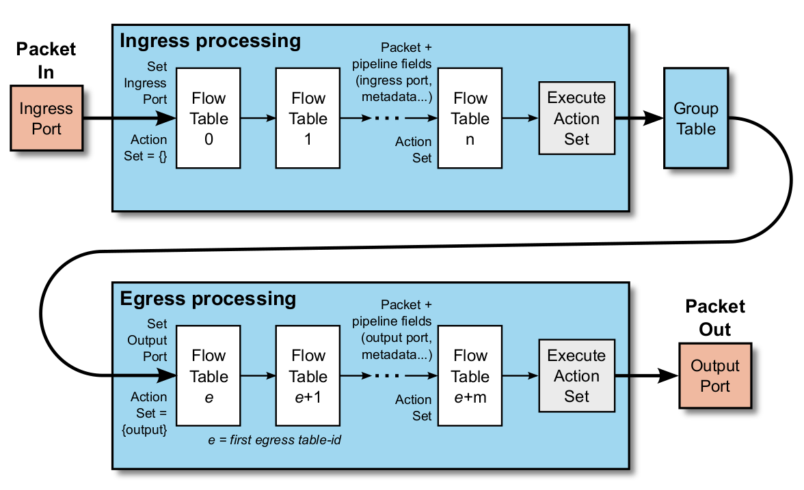
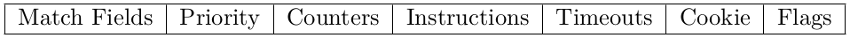
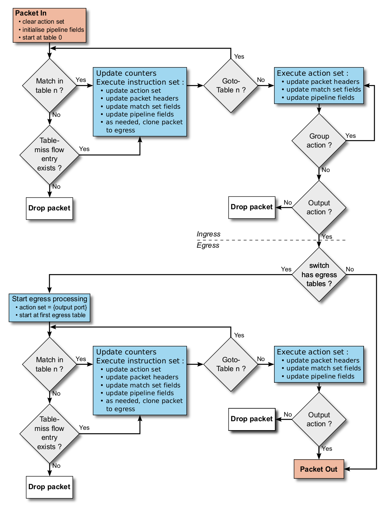

OpenFlow 是 SDN 中使用最广泛的协议，本文记录了笔者对于 OpenFlow 通信流程的理解，绝大部分内容参考 OpenFlow 协议规格书，例如 OpenFlow Switch Specification Version 1.5.1 ( Protocol version 0x06 )。
OpenFlow 通信流程
建立 TCP 连接
SDN 控制器和交换机进行常规 TCP 三次握手，建立连接。TCP 是 OpenFlow 底层的通信协议，是整一套系统的基础设施。
互相问好 - OFPT_HELLO
创建 TCP 连接之后：
- 交换机首先向控制器发送 OFPT_HELLO 数据包。
- 随后控制器也会回复 OFPT_HELLO 数据包给交换机。
Hello 过程中：
- 目的：协议协商。
- 内容：本方支持的最高版本的协议。
- 成果：使用双方都支持的最低版本协议。
- 成功：建立连接。
- 失败：OFPT_ERROR (TYPE:OFPT_HELLO_FAILED,CODE =0),终止连接。
交换机信息交互 - OFPT_FEATURES
完成 Hello 包交互之后：
- 控制器向交换机发送 OFPT_FEATURES_REQUEST 请求交换机信息。
- 交换机向控制器回复 OFPT_FEATURES_REPLY 告知控制器信息。
OFPT_FEATURES_REQUEST 包没有数据内容，如下图所示：

OFPT_FEATURES_REPLY 包含了交换机自己的 features，回复给控制器之后，控制器就对交换机有了一个全面的了解，从而为后面的控制提供的控制信息。其中最主要的是 Datapath ID，即交换机的编号。

- datapath id 数据通道标识符，用来表示交换机的身份。在每一个控制器中独一无二。
- n_buffers 一次最多缓存的数据包数量，即交换机自己的缓存能力。
- n_tables 表示交换机支持的流表数量。
- capabilities 交换机端口所支持的功能.
OpenFlow 1.0 的 OFPT_FEATURES 包含了交换机和端口的信息，由于在 1.3 及其以后，端口消息移到了 Multipart 中，因此无法看到端口信息。
端口信息交互 - OFPT_MULTIPART
OpenFlow 1.3协议将 stats 框架更名为 multipart 框架，并且将端口描述移植到 OFPT_MULTIPART 消息中。
当控制器获取到交换机的信息之后，开始获取端口信息：
- 控制器通过 OFPT_MULTIPART_REQUEST 消息查询交换机的端口信息，消息体为：OFPMP_PORT_DESC
- 交换机通过 OFPT_MULTIPART_REPLY 回复控制器的查询，回复的内容包括交换机端口的性能，特性等。
控制器下发配置 - OFPT_SET_CONFIG
控制器通过 OFPT_SET_CONFIG 消息下发配置，并且通过 OFPT_GET_CONFIG_REQUEST 获取交换机的配置，用来确保下发成功了。
现在有一个问题，我们默认数据下发的顺序不会在传输中发生变化，也就是交换机依次收到了两个消息，交换机先进行设置，然后构造 OFPT_GET_CONFIG_REPLY 来回复，假设此时交换机在还没有完成设置的情况下，便回复了 OFPT_GET_CONFIG_REPLY 消息，那么可能造成配置上报的不正确。
因此，当控制器要确保某消息的依赖操作已经在交换机完成，或要接收有关完成操作的通知时，它可以使用 OFPT_BARRIER_REQUEST 消息。该消息没有内容，交换机收到 OFPT_BARRIER_REQUEST 消息后，必须完成所有在 OFPT_BARRIER_REQUEST 之前接受到的消息的处理过程（包括发送相应的答复或错误消息），才能执行后续消息处理。
如下图所示，控制器直接下发了三条连续的 OpenFlow 消息，

交换机在回复屏障消息之后，再回复查询配置消息。

保持连接状态 - OFPT_ECHO
当没有其他的数据包进行交换时，为了确保通信通畅，控制器需要查询连接状态。
- 控制器会定期循环给交换机发送 OFPT_ECHO_REQUEST。
- 交换机收到后回复 OFPT_ECHO_REPLY。
如下图所示：


数据包结构
OpenFlow 包头 (Header)
每个 OpenFlow 包/消息都以 OpenFlow Header 开始。
1 | /* Header on all OpenFlow packets. */ |
- version：OpenFlow 协议版本
- type：表示该包/消息的类型，OpenFlow 协议中的消息按照通信的方式可以分为 Controller to Switch 消息，Asynchronous 消息，symmetric 消息三种。
- length：数据包的总长度 (包含头部)，由于 header 最少为 8 字节，因此 length 最少为 8。
- transaction id (xid)：事务 ID 其实就是数据包编号，请求包和回复包的事务 ID 是相同的，表示两者共同完成了一件事。
头部中类型字段的值如下：
- 控制器/交换机消息由控制器发送，可能需要也可能不需要交换机的响应。
- 异步消息无需征得控制器同意便可以由交换机发送，交换机将异步消息发送给控制器，表示数据包到达、交换机状态更改或错误。
- 对称消息无需征得对方同意便可以双向发送，可以是交换机先发送，也可以是控制器先发送。
1 | enum ofp_type { |
Introduction
本文描述了 OpenFlow 逻辑交换机的技术特性，包括交换机组成部分，基本功能，以及 OpenFlow 控制器如何通过 OpenFlow switch 协议管理交换机。其他关于 OpenFlow 协议和 SDN 的文档可以在 Open Networking Foundation website 找到。
一个 OpenFlow 交换机的主要组成部分如下图所示：

Switch Components
一个 OpenFlow 逻辑交换机包括：
- 一个或多个流表 (one or more flow tables) 以及一个组表 (a group table)，它们用来实现包的查询，转发。
- 一个或多个 OpenFlow 通道 (one or more OpenFlow channels)，用来与外部控制器通信。
通过 OpenFlow switch 协议，控制器可以主动的或被动的在 flow table 中加入、更新、删除 flow entries，每个 flow entry 都包含 match fields，counters，以及 a set of instructions 用来匹配包。
匹配从管线 pipline 中的第一个 flow table 开始，并且可能持续匹配多个 flow tables。在每个流表中，
OpenFlow Ports
OpenFlow 端口 (port) 是传输包的网络接口，如同 Ethernet 端口一样，OpenFlow 交换机之间通过端口相连组成网络。
网络中的 OpenFlow 包从交换机的 输入端口 (ingress port) 进入，经过 pipline 处理，然后从 输出端口 (output port) 转发到网络中 (如果需要转发的话)。
OpenFlow 交换机必须支持三种类型的端口：
- 物理端口 (physical ports)
- 逻辑端口 (logical ports)
- 保留端口 (reserved ports)
Standard Ports
OpenFlow 标准端口定义为物理端口，逻辑端口以及可选的 LOCAL 保留端口 (不包括其他的保留端口)。标准端口的含义是 OpenFlow-only 交换机所支持的端口。
Physical Ports
物理端口是由交换机定义的端口，由交换机对应的硬件决定的。例如一个以太网交换机，物理端口和以太网接口是一一对应的。
在某些部署环境中，OpenFlow 交换机是虚拟于硬件之上的，在这种情况下，物理端口可能表示该交换机对应硬件接口的一个虚拟的切片 (a virtual slice of the corresponding hardware interface of the switch)。
Logical Ports
OpenFlow 逻辑端口是交换机定义的端口，与交换机的硬件接口不直接对应。逻辑端口是更高级别的抽象，可以由交换机通过非OpenFlow 方法 (例如，链路聚合组、隧道、环回接口) 定义。逻辑端口可以包括包封装，并且可以映射到各种物理端口。
物理端口和逻辑端口之间的唯一区别是，与逻辑端口关联的数据包可能有一个称为 tunnel-ID 的额外管道字段与其关联，当逻辑端口上接收到的数据包发送到控制器时，其逻辑端口和对应的物理端口都会报告给控制器。
Reserved Ports
保留端口是由协议所规定的，表示一类端口，用来指定通用的转发操作。一个交换机不需要支持所有的保留端口，以下需要支持的使用 required 标识：
- Required: ALL: 表示交换机可用于转发特定数据包的所有端口。
- Required: CONTROLLER: 表示和控制器相连的控制通道端口。
- Required: TABLE:
- Required: IN_PORT: 表示包进入端口。只能用作输出端口，将包从进入端口转发出去。
- Required: ANY: 用于一些 OpenFlow 请求中当没有指定端口时。
- Required: UNSET:
- Optional: LOCAL:
- Optional: NORMAL:
- Optional: FLOOD:
OpenFlow Tables
OpenFlow tables 包括三种表：
- Flow tables:
- Group tables:
- Meter tables:
Pipeline Processing

Flow Tables and flow entries

Matching

Table-miss
Group Table
Meter Table
OpenFlow Channel and Control Channel
The OpenFlow Switch Protocol
The heart of the OpenFlow switch specification is the set of structures used for OpenFlow Switch Protocol messages.
Protocol Basic Format
Header
Padding
Reserved and unsupported values and bit positions
Common Structure
Port Structures
Controller-to-Switch Messages
Handshake
Switch Configuration
Asynchronous Message
Symmetric Message
Hello
Echo Request
Glossary
- Action
- List of Actions:
- Datapath: The datapath includes the pipeline of flow tables, the group table and the ports.
- Flow Table: a stage of the pipeline. It contains flow entries.
- Flow Entry: an element in a flow table used to match and process packets.
- Forwarding: Deciding the output port or set of output ports for a packet, and transfering that packet to those output ports.
- Group:
- Header: control information embedded in a packet used by a switch to identify the packet and to inform the switch on how to process and forward the packet. The header typically includes various header fields to identify the source and destination of the packet, and how to interpret other headers and the payload.